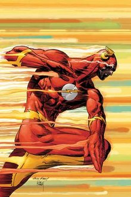

Welcome to all things Flash!
Page last updated: 11/18/2018
This site gives you a little taste into the world of The Flash. Coupled with multidimensional adventures and saving the world, The Flash does it all!
The Fastest Man Alive!
Barry Allen, commonly considered the fastest man alive, made his first debut in 1956 in a comic
titled Showcase. Having his home set in Central City, a fictionary city, Barry grew up without his parents.
When Barry was young, his mother was killed by his archnemesis, Reverse-Flash, with the murder being pinned on
Barry's father. In turn, Barry grew up wanting to be a police/forensic scientist to solve his mother's murder,
knowing that his father didn't murder her. Opposed to his powers he develops later on, Barry's tendencies are
tardiness and absent-mindedness due to his devotion to crime-solving. Late one night while he was working in his
lab, Barry's case of chemicals was shattered by lightning, dousing him in these chemicals granting him his speed.
After realizing his power, he devises a suit similar to his favorite comic book hero Jay Garrick Flash, who is from
Earth-2 originally. Over the course of his career, many events that are detailed in the Timeline tab occur affecting
all of the DC Multiverse many times over.